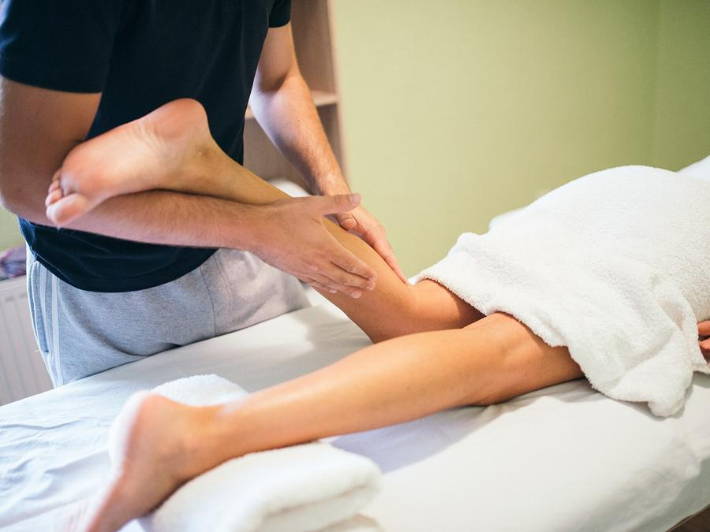
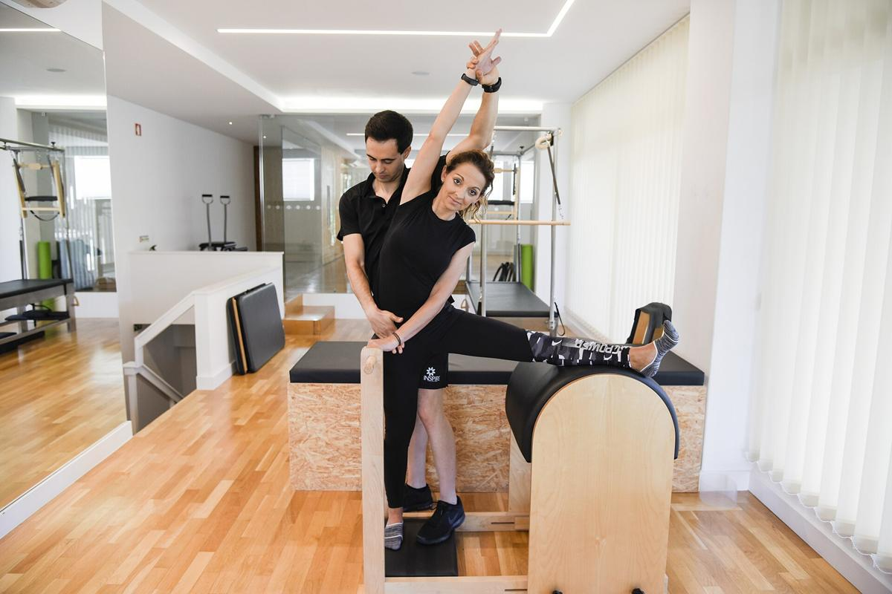
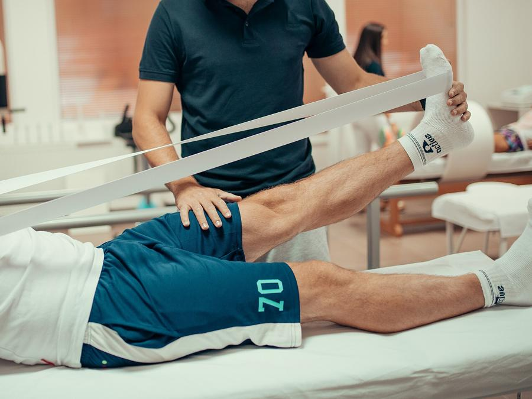
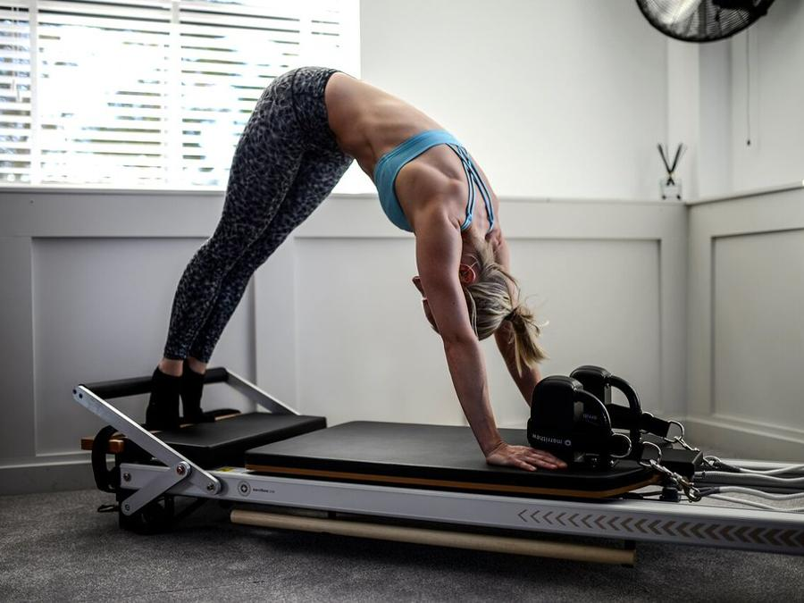
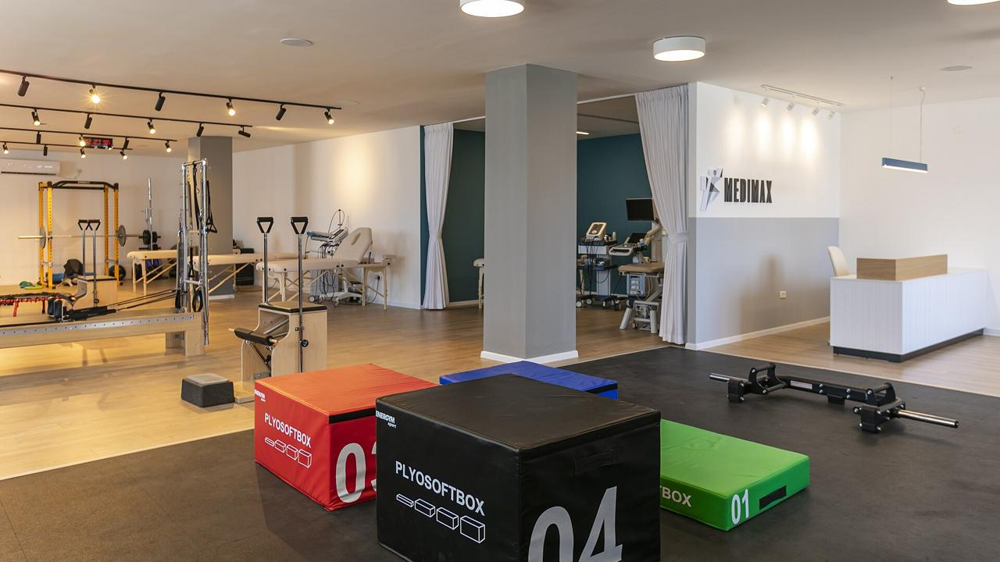

Dor lombar e cervical
Avaliação da postura e de como você se movimenta, terapia manual e exercícios para a coluna, com orientações para o trabalho e o dia a dia.
Agendar para issoSite de demonstração da Recepção Digital. Nome, registro e contatos são fictícios.
Fisioterapia ortopédica e pilates clínico no Cambuí. Sessões de 50 minutos, um paciente por vez, com plano de tratamento revisado a cada etapa.
Dra. Lívia Moreira · Fisioterapeuta · CREFITO-3 000000-F (fictício)

Cada tratamento começa por uma avaliação. O plano é montado para a sua rotina, o seu histórico e o que você quer voltar a fazer.

Avaliação da postura e de como você se movimenta, terapia manual e exercícios para a coluna, com orientações para o trabalho e o dia a dia.
Agendar para isso
Acompanhamento depois de cirurgias de joelho, ombro, quadril ou coluna, seguindo as orientações do seu médico em cada fase.
Agendar para isso
Exercícios no reformer e no solo, adaptados à sua condição, em sessões individuais conduzidas pela fisioterapeuta.
Agendar para issoEntorses, tendinopatias e lesões musculares, com retorno gradual ao esporte e testes de força ao longo do caminho.
Avaliação de mobilidade e força do ombro, com exercícios progressivos e terapia manual quando indicada.
Treino de equilíbrio, força e marcha para adultos e idosos, com exercícios para fazer também em casa.
Três passos, sem formulário no site. Seus dados de saúde ficam na consulta, não na internet.
Conte em poucas palavras o que está sentindo e escolha um horário. A resposta vem no mesmo dia útil.
Leva 2 minutosTestes de movimento e de força, e uma conversa sobre o seu histórico. Traga exames e laudos que tiver.
Sessão de 50 minutosVocê sai com os objetivos, a frequência sugerida e os exercícios para casa. O plano é revisado a cada etapa.
Entregue no mesmo diaFisioterapeuta formada pela PUC-Campinas, com especialização em fisioterapia traumato-ortopédica. Atende no Cambuí desde 2016 e trabalha com sessões individuais.
Atendimento particular, com recibo para você pedir reembolso ao seu plano de saúde, se ele oferecer. Sessões com hora marcada, sem sala de espera cheia.
CREFITO-3 000000-F (fictício)
Agendar avaliaçãoNo site real, estas avaliações vêm das avaliações públicas do Google, publicadas com autorização.
Cheguei com medo de mexer as costas. Ela explicou o que estava acontecendo, mostrou cada exercício e me mandou o plano por escrito. Sempre sei o que fazer em casa entre uma sessão e outra.
Fiz a reabilitação do joelho depois da cirurgia. Gostei de ser atendido sempre pela mesma pessoa e de ver os testes de força a cada etapa.
Horário pontual, sessão sem pressa e consultório perto do trabalho. O pilates no reformer foi adaptado para a minha lombar.

| Segunda a sexta | 7h às 20h |
|---|---|
| Sábado | 8h às 12h |
| Domingo | Fechado |